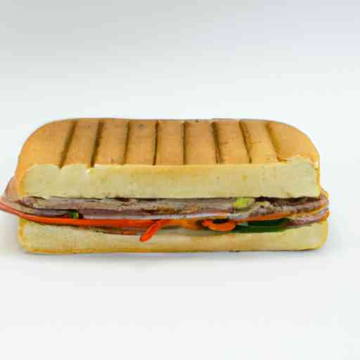

The Next Chapter in Food Tech: The Rise of Sandwich 3D Printers
 Imagine walking into your kitchen, pressing a few buttons on a sleek machine, and watching as it begins to magically assemble a fresh, healthy sandwich for you. No, this isn't a scene from a sci-fi movie set in the distant future — welcome to the present world of 3D food printers! An adaptation of the increasingly popular 3D printing technology, these innovative devices are capable of assembling meals ranging from chocolate desserts to, yes, entire sandwiches. This article dives into the shifting tides of food technology, exploring the rise of sandwich 3D printers, how these devices work, and their potential implications for our future dining experiences. From Blueprint to Bread: How Sandwich 3D Printers Work While traditional 3D printers manufacture objects using materials like plastic or metal, food 3D printers like the sandwich printer use edible materials. Picture a common inkjet printer; instead of depositing little droplets of ink, a sandwich 3D printer deposits tiny morsels of food ingredients, meticulously layer by layer, until a full sandwich is formed. The ingredients used in sandwich 3D printers come in the form of edible 'inks,' usually a pureed or finely ground version of the original food. Each layer is mapped out by the printer based on a digital blueprint or recipe inputted by the user. It's essentially like having a personal sous-chef at your fingertips that can precisely replicate any recipe with gourmet precision. Examples of this technology in action include machines like the Foodini by Natural Machines and the BeeHex Chef 3D. According to a BBC report, the BeeHex can print a simple six-inch pizza in just six minutes! It should be noted, however, that most current models of food 3D printers are only capable of assembling raw ingredients. A completed 3D printed sandwich, pizza or pasta still needs to be cooked conventionally. But that may change as the technology continues to evolve. The Implications: Challenging Culinary Borders While the concept of 3D printed food—especially sandwiches—might seem like a fancy gadget for luxury kitchens, the potential benefits and applications of this technology stretch far beyond bragging rights at dinner parties. With the capacity to control ingredients down to the minute detail, 3D food printers could significantly improve personalized nutrition. They could cater to individual dietary needs, offering precise control over portion sizes and nutritional content—a promising application for controlling obesity and managing dietary diseases. Prodigious culinary creativity is another exciting aspect of 3D food printers. The technology broadens the horizon for what's possible in food design and presentation, allowing for intricate patterns and spatial structures more complex than any human chef could manually assemble. Looking forward, 3D food printing has a tremendous role to play in the future of sustainable eating. Insect-based protein, for instance, is a highly sustainable food source that many consider the future of food, but its 'ick' factor holds many people back. This scenario is where 3D food printers can come in handy, transforming unappealing ingredients into visually delightful foods. A Dynamic Bite of the Future The world of 3D printed food is undeniably exciting, and sandwich printers are just the beginning. As technology revolutionizes, these printers may grow to include integrated cooking functions. They may even have the potential to combine different types of foods or nutrients into a single 'edible ink,' marrying convenience with personalization like never before. It's not unrealistic to imagine a future where every kitchen houses a 3D food printer, assembling delectable, nourishing meals at the push of a button. Sandwich printers are part of a burgeoning food tech revolution, promising a future where the intersection of culinary arts, nutrition, and technology will offer us a dynamic new relationship with the food we eat. So, the next time you're preparing a sandwich, consider this – how would a sandwich printer revolutionize your lunchtime routine?